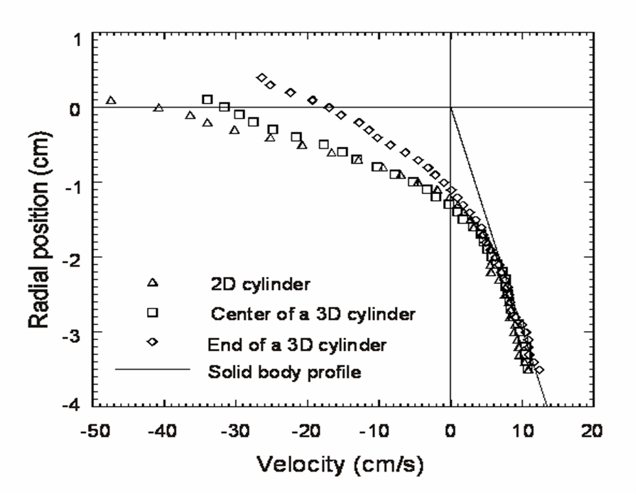

|

The velocity profiles of particles in 2D cylinders
or near the endwalls of 3D rotating cylinders are significantly different
compared to the profile far from any walls at
the axial center of a 3D cylinder. For 2D flow, the angle of repose is larger
and the surface flow velocity is faster compared to 3D flows
away from the end walls and the mass flux must be conserved. In
contrast, near the end wall of 3D flows, the transverse velocities
are smaller at every depth compared to flows far from
the end walls and the transverse mass flux is not conserved
in the slice because the 3D flow has axial components into and out
of the transverse slice.
Maneval, J.E., Hill, K.M., Smith, B.E., Caprihan, A., Fukushima, E.
Effects of end wall friction in rotating cylinder granular flow experiments
(2005) Granular Matter, 7 (4), pp. 199-202.
|